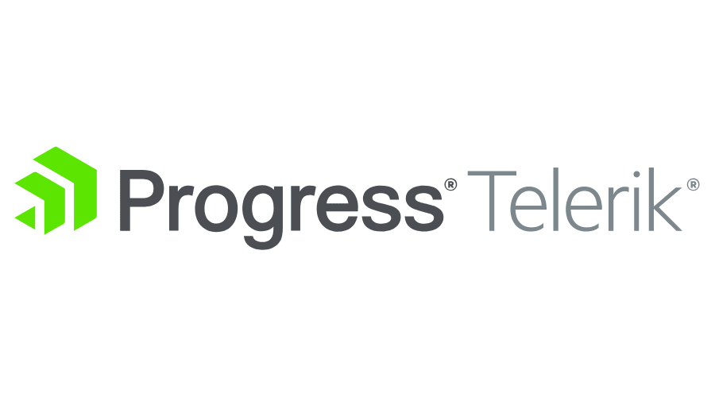
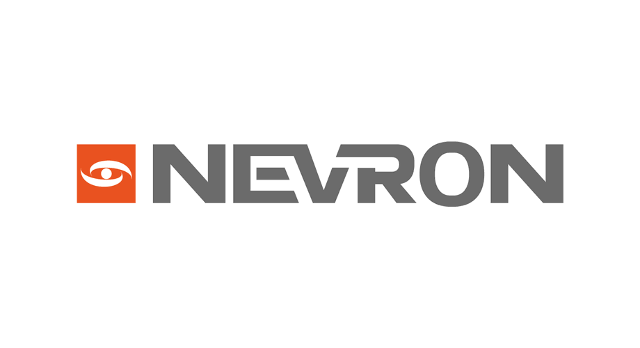
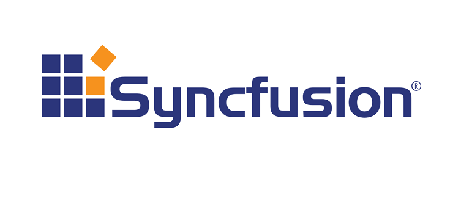
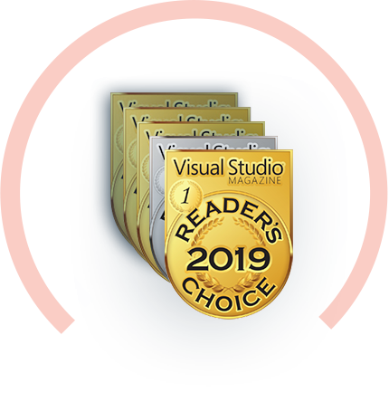
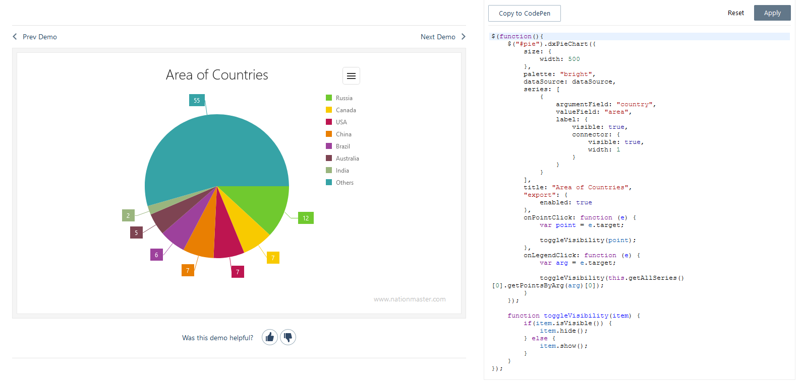

Stage dans l'entreprise Choriandre 2019-2020
Mon stage a consisté à un réalisé une application web permettant la gestion de portefeuille.
Il a été réalisé avec de:
- PHP
- SQL
Je suis un étudiant en seconde année de BTS SIO au lycée Sidoine Apollinaire.
Je vous présente mon portfolio qui vous orientera sur mon suivi scolaire et mes différentes compètences acquises.
J'ai réalisé un BTS SIO (Services Informatiques aux Organisations).
Avec l'option SLAM (Solutions Logicielles et Applications Métiers).
J'ai réalisé un Baccalauréat STMG (Sciences et Technologies du Management et de la Gestion).
Avec la spécialité SIG (Systèmes d'Information de Gestion).
J'ai aussi la mention anglais européenne appliqué à l'économie et au droit.
Mon stage a consisté à un réalisé une application web permettant la gestion de portefeuille.
Il a été réalisé avec de:
- PHP
- SQL
Mon stage a consisté à un réalisé un site WordPress et exporter un extrait de base de données.
Il a été réalisé avec de:
- ASP.NET
- JavaScript
- HTML/CSS (Bootstrap)
J'ai réalisé une veille technologique sur DevExtreme qui est une suite de composants JavaScript et HTML5.
DevExtrem est le successeur de DevExpress est une solution qui porte le nom de sa société. DevExtreme, propose un outil et une bibliothèque de composant intégré directement aux systèmes Delphi, C++ et ainsi qu’à l’environnement de développement Microsoft Visual Studio. Effectivement, DevExtreme propose une bibliothèque de composant assez riche. Tous ces composants sont orientés vers une finalité d’analyse. En effet, DevExtreme se positionne sur la création d’outils d’analyse de données. Leur composant, permet la mise en place rapide et de manière efficiente, d’outils d’analyse dans une solution informatique. Cette suite de composants est libre d’accès et d’usage à des fins non-commerciales et propose une solution complète payante pour un usage commercial.
DevExtreme en détail
Vous pourrez rapidement élaborer une application web, de sa structure HTML responsive conçue au travers de plusieurs thèmes (il est possible d’exporter, d’importer, d’éditer et/ou de surcharger vos styles et thèmes avec le « Theme Builder »). Pour prendre en main ces différents widgets, chaque composant est présenté sur le site de l’éditeur au travers d’exemples tous modifiables et testables dynamiquement avec plus de 250 cas d’utilisation dans différents langages de programmation. La solution est facile et rapide à assimiler car chaque composant se déclare et se personnalise de la même manière. Une fois cette logique acquise, on gagne un temps précieux dans l’implémentation et l’utilisation des composants au sein de l’applicatif web développé.
Ses concurrents
Ses trois principaux concurrent sont : Telerik Nevron Syncfusion
  Malgré cela il arrive tout de même à être élu plusieurs fois de suite par Visual Studio Magazine comme meilleur suite de composant.
Point Fort
L’utilisation de DevExtreme possède bon nombre d’avantages au niveau du développement en lui-même, mais également du temps imparti ainsi que du résultat final. En effet, cette librairie possède une intégration assez facile. Après avoir pris un abonnement, il y a juste à télécharger la librairie, l’installer sur le poste de travail et ensuite l’intégrer à Visual Studio. Après ces manipulations, DevExtreme est prêt à être utilisé dans tout projet en ASP.NET. Ensuite, au niveau du développement, cette solution permet une production efficiente d’une fonctionnalité d’une application. En effet, l’intégration des composants DevExtreme est assez simple et intuitive. Les composants présents dans la librairie sont prêts à être utilisés et configuré. Ceci permet à un projet d’avoir une productivité importante de par la qualité des composants présents ainsi que leur déploiement rapide et efficace. Un gain de temps est aussi présent au niveau de la partie ergonomie.
Effectivement, DevExtreme propose plusieurs thèmes pour leur composant. Ces thèmes sont riches, du thème flat design au thème Office. Cette partie va permettre à l’utilisateur de DevExtreme de pouvoir ce concentré sur la partie intelligence du système plutôt que sur le design. D’autant plus que le large choix de thème correspond parfaitement à l’ensemble de demandes logiciel. Par exemple, DevExtreme possède un thème d’office 2010 et 2016 qui ravira les utilisateurs inconditionnels de l’environnement Microsoft Office et également permettra à l’utilisateur final d’être dans un environnement connu et donc gagner en temps de formation. La modularité des composants présents dans la librairie est également importante. En effet, la mise en place de composant tel des grid, graphiques ; peu s’effectuer dans des environnements qui n’étaient pas conformes à la base. Cette modularité est importante pour toute conception. En outre les faits techniques, DevExtreme possède une communauté de qualité. En effet, une équipe support est présente sur leur forum et délivre beaucoup d’information sur les bug ou bien même sur les bonnes pratiques qui ne sont pas forcément citées dans les documentations officielles. Leur réactivité est également un point fort pour avancer dans chaque processus de développement. De plus, DevExtreme met à disposition des démos de leur composant avec des exemples de mise en place ainsi qu’une documentation assez solide et technique.
Faiblesse
Cependant DevExtreme ne possède pas que des avantages, il y a aussi des points qui peuvent paraitre gênants dans certains cas, mais également de vrai inconvénient. En effet, dans les avantages cités ci-dessus, il y avait la flexibilité des composants au niveau de l’environnement. A l’inverse de cette grande flexibilité, au niveau de l’intelligence des composants la personnalisation devient beaucoup plus complexe. En effet, DevExtreme ne permet pas, ou difficilement, de personnaliser ces composants pour qui répondent à un certain besoin. Sur des applications bien spécifiques, cela peut devenir très contraignant et DevExtreme perd son côté productif pour une conception d’application. De plus, l’utilisation de cette librairie peut être assez restrictive. En effet, l’utilisation de DevExtreme est optimale pour des solutions d’analyse de données. Cependant, elle n’est pas du tout prévue pour la conception de site classique telle que des sites vitrines ou alors des sites e-commerce. Leur volonté de couvrir un domaine bien spécifique leur ferme des portes sur tous les autres domaines. En dernier lieu, il faut savoir que DevExtreme peut paraitre inadapté lors d’une utilisation avec de très grosses données, type Big data. En effet, les composants proposés répondent en manière de performance à bon nombre de critères, mais, parfois, ne sont pas assez puissants pour des traitements de données très importantes. Malgré son bon nombre d’avantages, DevExtreme présente quand même certaines limites quand son utilisation n’est pas celle qu’il lui est destiné.
Force
L’utilisation de DevExtreme possède bon nombre d’avantages au niveau du développement en lui-même, mais également du temps imparti ainsi que du résultat final. En effet, cette librairie possède une intégration assez facile. Après avoir pris un abonnement, il y a juste à télécharger la librairie, l’installer sur le poste de travail et ensuite l’intégrer à Visual Studio. Après ces manipulations, DevExtreme est prêt à être utilisé dans tout projet en ASP.NET. Ensuite, au niveau du développement, cette solution permet une production efficiente d’une fonctionnalité d’une application. En effet, l’intégration des composants DevExtreme est assez simple et intuitive. Les composants présents dans la librairie sont prêts à être utilisés et configuré. Ceci permet à un projet d’avoir une productivité importante de par la qualité des composants présents ainsi que leur déploiement rapide et efficace. Un gain de temps est aussi présent au niveau de la partie ergonomie.
Effectivement, DevExtreme propose plusieurs thèmes pour leur composant. Ces thèmes sont riches, du thème flat design au thème Office. Cette partie va permettre à l’utilisateur de DevExtreme de pouvoir ce concentré sur la partie intelligence du système plutôt que sur le design. D’autant plus que le large choix de thème correspond parfaitement à l’ensemble de demandes logiciel. Par exemple, DevExtreme possède un thème d’office 2010 et 2016 qui ravira les utilisateurs inconditionnels de l’environnement Microsoft Office et également permettra à l’utilisateur final d’être dans un environnement connu et donc gagner en temps de formation. La modularité des composants présents dans la librairie est également importante. En effet, la mise en place de composant tel des grid, graphiques ; peu s’effectuer dans des environnements qui n’étaient pas conformes à la base. Cette modularité est importante pour toute conception. En outre les faits techniques, DevExtreme possède une communauté de qualité. En effet, une équipe support est présente sur leur forum et délivre beaucoup d’information sur les bug ou bien même sur les bonnes pratiques qui ne sont pas forcément citées dans les documentations officielles. Leur réactivité est également un point fort pour avancer dans chaque processus de développement. De plus, DevExtreme met à disposition des démos de leur composant avec des exemples de mise en place ainsi qu’une documentation assez solide et technique.
Conclusion
DevExtreme propose diverses librairies de composants adaptées à des demandes précisent en terme de développement. Ces outils permettent d’accroitre la productivité du développement d’une application ainsi que de correspondre aux demandes finales.